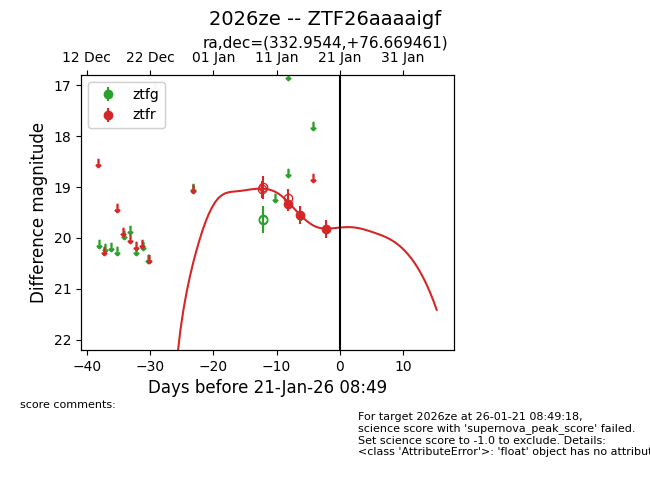
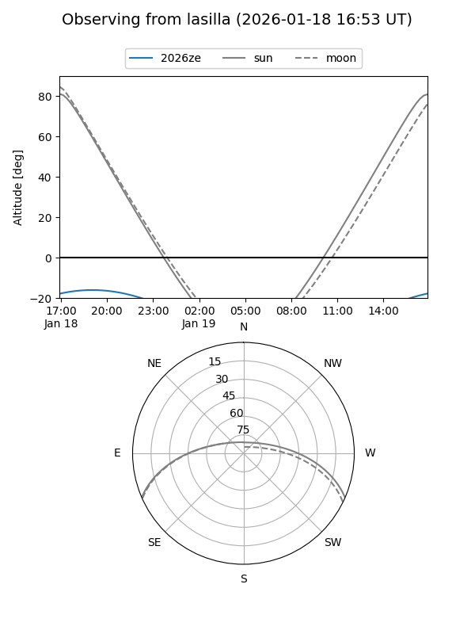
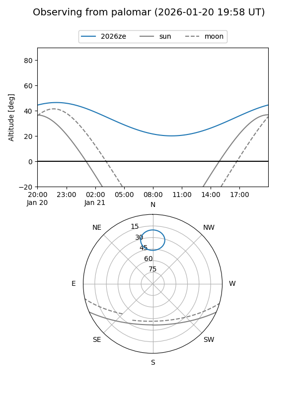
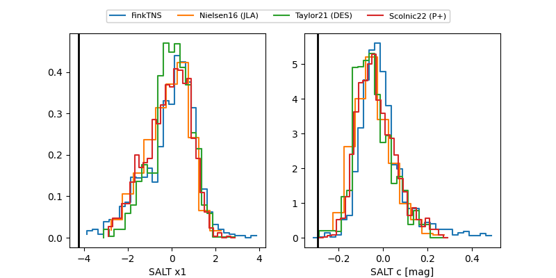

2026ze
Target 2026ze at 2026-01-17 08:45
Aliases and brokers:
FINK: link
Lasair: link
ALeRCE: link
TNS: link
YSE: link
alt names
ZTF26aaaaigf (ztf,fink_ztf)
2026ze (tns,yse)
Coordinates:
equatorial (ra, dec) = 332.9544,+76.66946
equatorial (HMS+DMS) = 22:11:49.06,+76:40:10.06
galactic (l, b) = (114.0514,+16.63566)
Flags:
Photometry:
last ztfr=19.55
2 ztfr detections
Lightcurve

Visibility


Additional plots
